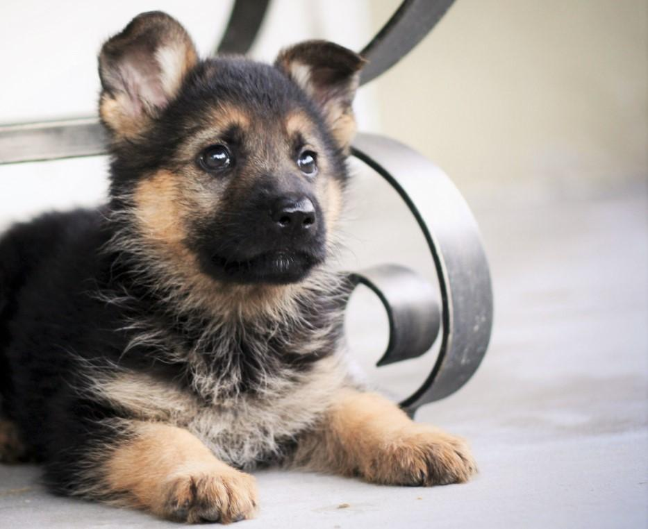

Chihuahua
El chihuahua, también conocido como chihuahueño, es una raza de perro originaria de México.
Cocker
El cocker inglés es una raza de perro originaria de Inglaterra que fue desarrollada con la finalidad de perseguir a las gallinetas arreándolas de sus escondites en los arbustos.

Pastor Aleman
El pastor alemán, también conocido como ovejero alemán, es una raza de perro pastor originaria de Alemania de tamaño mediano a grande. La raza es relativamente nueva, ya que su origen se remonta a 1899. Forman parte del grupo de pastoreo, ya que fueron perros desarrollados originalmente para reunir y vigilar ganado.